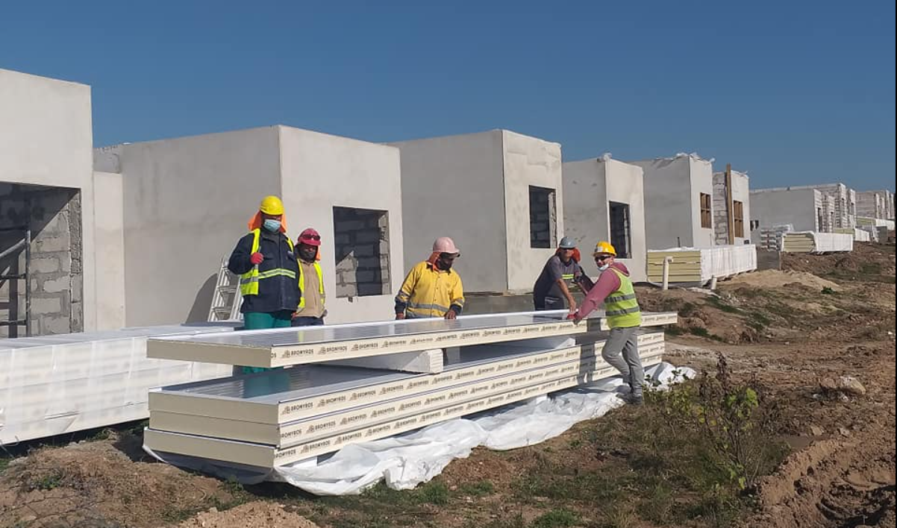
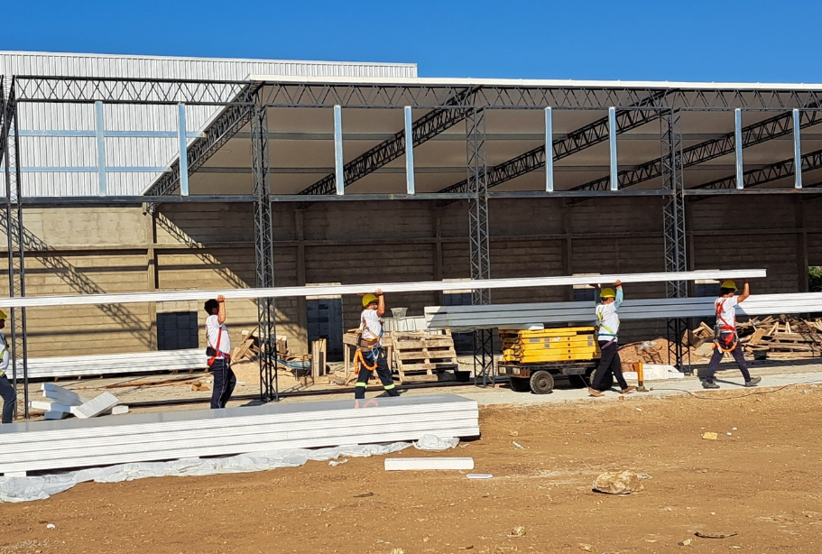

Nuestra compañía comenzó en los años 2000. Principalmente como prestadora de servicios de mano de obra calificada para los sistemas de drywall y stell framing. Con el paso del tiempo decidimos afrontar nuevos desafíos, fundamentalmente apostando a los nuevos materiales, donde nos especializamos en la construcción con paneles térmicos para viviendas, fachadas y cubiertas. Contamos con un equipo humano comprometido con altos estándares de mano de obra y políticas de seguridad ocupacional bien definidas. Fuimos pioneros en la construcción integral de viviendas en paneles EPS, siendo nuestras edificaciones tester del Ministerio de Vivienda.
Por más de 20 años nos hemos dedicado a la construcción prefabricada, trabajando con las tecnologías y productos más innovadores del mercado. En los últimos 15 años nos especializamos en los sistemas de paneles aislantes, poniendo principal foco en viviendas, cubiertas y fachadas.
